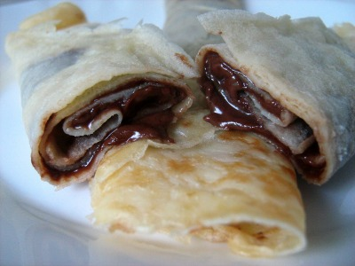
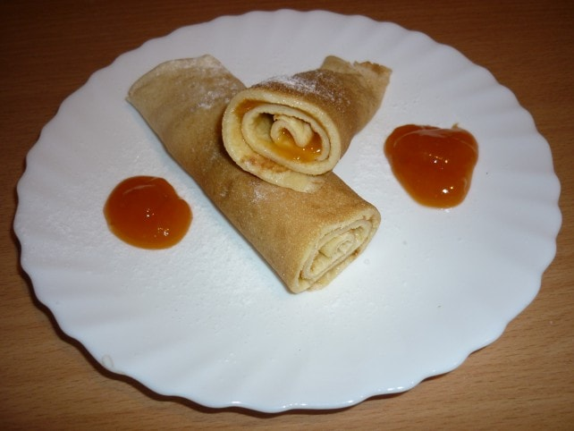
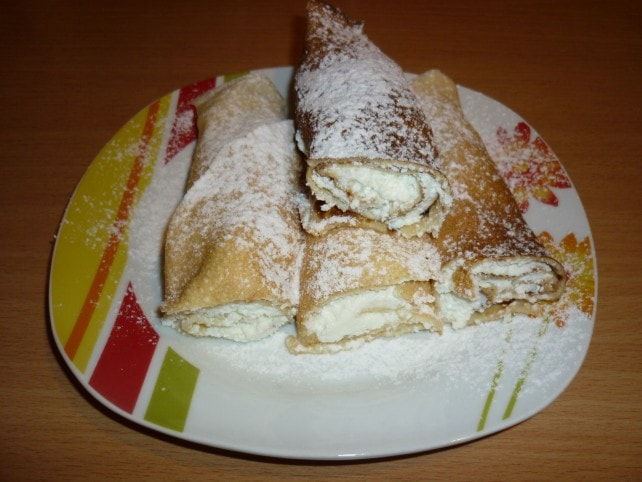

Hozzávalók: - 20 dkg finomliszt
- 2 darab tojás
- 20dkg finomliszt
- 3dl tej
- 2dl szénsavas ásványvíz
- 1/2dl étolaj
- csipet só
- cukor,nutella ízlés szerint
- Elkészítési idő: 45 perc
1. Egy nagy tálban keverjük össze a tojásokat a cukorral. Ezután adjuk hozzá a lisztet, a tejet, a szénsavas vizet és a sót, majd addig keverjük, míg homogén tésztát nem kapunk.
2. Végül öntsük hozzá az olajat is, és azt is jól keverjük el benne.Egy kevés olajat melegítsünk fel egy serpenyőben, majd ha kellőképpen felmelegedett, egy merőkanállal öntsünk annyi tésztát a serpenyőbe, amilyen vastagra szeretnénk a palacsintánkat. Ha az alja megsült, fordítsuk meg és süssük meg a másik felét is.

Hozzávalók a tésztához:
- 3 db tojás
- 15 dkg cukor
- 45 dkg liszt
- szénsavas ásványvíz
A töltelékhez:
- sárgabaracklekvár
- porcukor
1. A tojásokat a cukorral habosra kavarjuk, majd hozzáadjuk a lisztet. Összedolgozzuk és ásványvízzel lazítjuk a tésztát.
2. A palacsintákat a szokásos módon kisütjük és hűlni hagyjuk, végül sárgabaracklekvárral megtöltjük, és feltekerjük.
3. Tálaláskor porcukorral megszórjuk.

Hozzávalók a palacsintához:
- 3 db tojás
- 1 ek cukor
- 1 csomag vaníliás cukor
- 45 dkg liszt
- kb. 1 liter szénsavas ásványvíz
A töltelékhez: 20 dkg túró, 1 db citrom reszelt héja, 1 csomag vaníliás cukor, 10 dkg porcukor, 3 dkg vaj
A szóráshoz: -porcukor
1. A tojásokat a cukorral és a vaníliás cukorral habosra keverjük, majd hozzáadjuk a lisztet. Összedolgozzuk és az ásványvízzel lazítunk a tésztán, amíg el nem érjük a palacsintatészta állagot.
2.Teflon vagy kerámiabevonatos serpenyőben egyenként kisütjük a palacsintákat, és hűlni hagyjuk.
3.A túrót összetörjük a villával, majd hozzáadjuk a citrom reszelt héját, a vaníliás cukrot, a porcukrot és a vajat. Krémesre keverjük, majd egyenként megtöltjük vele a palacsintákat.
